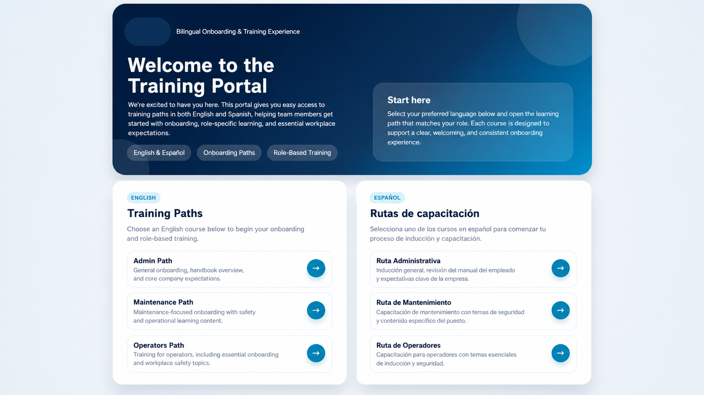
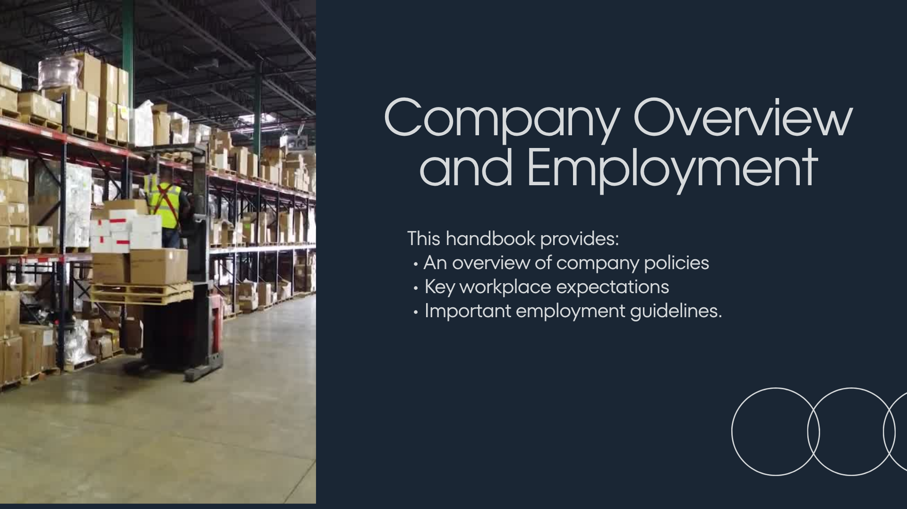
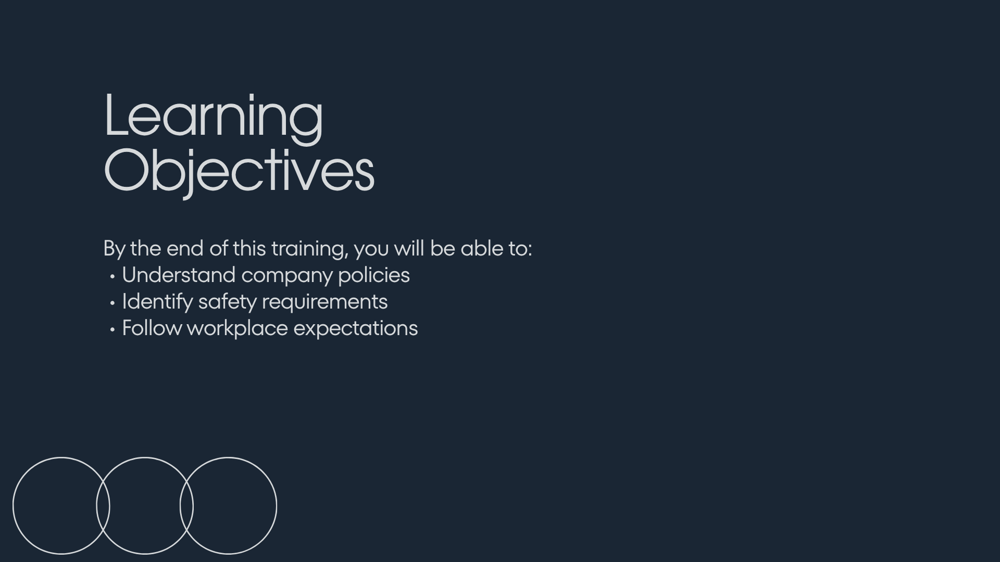
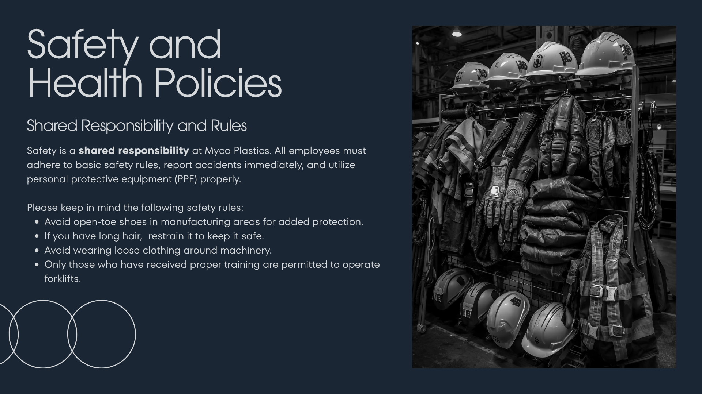
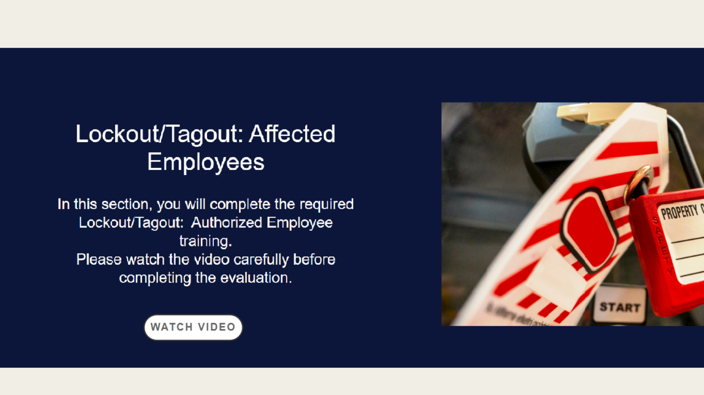

A structured onboarding and training experience designed to help manufacturing employees access clear, practical, and bilingual learning resources.
The onboarding experience needed to be more organized, accessible, and easier to follow for employees working in a manufacturing environment.
The goal was to support employees with clear information about company expectations, safety topics, and role based training while also considering bilingual access and real workplace limitations.
I began by looking at how employees would actually experience the training, not just how the content looked on paper.
I focused on organizing information into clear learning paths, simplifying the language where possible, and creating materials that could support both English and Spanish speakers.
The experience was tested, adjusted, and refined based on how the content worked in real use.




The training materials were designed to communicate essential information such as safety expectations, workplace policies, and role specific training requirements.
The goal was not only to present information, but to make it easier for employees to understand what they needed to do and why it mattered.

I considered the needs of the company, the role of the employee, and the information people needed to access first.
I grouped training content into clear paths so employees could move through the experience with less confusion.
I tested the experience, noticed what could be improved, and adjusted the content and structure to make it clearer.
This project helped transform scattered onboarding and safety information into a more organized learning experience.
It also shows how I approach learning design: by listening to the needs of the organization, considering the reality of the learner, testing the experience, and improving the solution when needed.